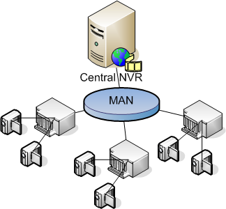
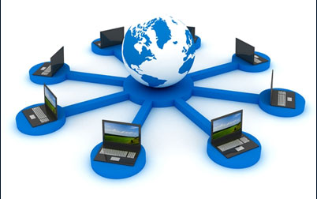

| LAN |
 |
LOCAL AREA NETWORK
Rete che copre una stanza o piccoli edifici. |
VANTAGGI:
1.E' una rete semplice.
2.E' facilmente estendibile.
SVANTAGGI:
1.E' adatta per piccole aree.
2.Ha una sicurezza limitata. |
| CAN |
 |
CONTROL AREA NETWORK
E' una rete piu' grande e complessa di una LAN copre normalmente piu' eifici vicini
ed e' composta da sotto reti LAN. |
VANTAGGI:
1.Normalmente e' piu' sicura di una LAN.
2.Consente la condivisione di risorse aziendali senza accesso a internet.
SVANTAGGI:
1.E' normalmente piu' costosa.
2.E' normalmente piu' complessa da gestire. |
| MAN |
 |
METROPOLITAN AREA NETWORK
E' una rete che copre parti di una citta'.
E' normalmente composta da sottoreti CAN. |
VANTAGGI:
1.Consente di condividere risorse aziendali anche tra sedi diverse.
2.E' una rete sicura.
SVANTAGGI:
1.E' una rete complicata e costosa.
2.Non e' sempre possibile realizzarla. |
WAN |
 |
WIDE AREA NETWORK
E' una rete che copre parti/regioni della terra |
VANTAGGI:
1.Consente di realizzare una rete parallela ad Internet.
2.E' una rete sicura.
SVANTAGGI:
1.Ha dei costi elevatissimi.
2.E' una rete complicata da realizzare e da gestire. |
| WLAN |
 |
WIRELESS LOCAL AREA NETWORK
E' una rete che si basa sull'uso di componenti WiFi. |
VANTAGGI:
1.E' una rete semplice da realizzare e gestire.
2.E' la rete piu' economica da realizzare.
SVANTAGGI:
1.E' una rete poco sicura.
2.Le prestazione offerte non sono molto buone. |